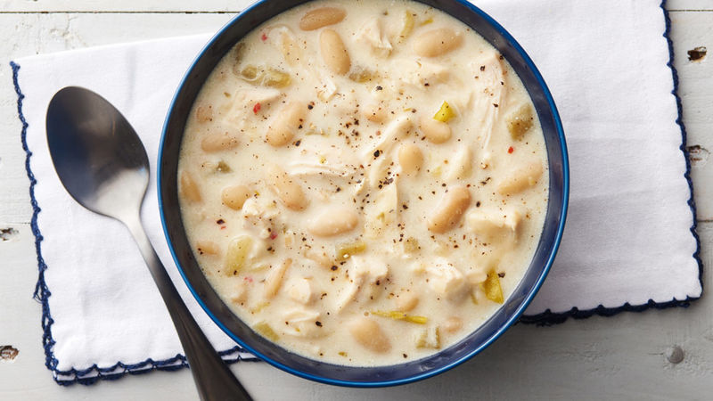

White Chicken Chili

White Chicken Chili, in all of its glory, stands tall and proud in the face of bad cookers!
For those who may consider themselves bad cookers, as I do myself, it feels a little humiliating at times when we have to eat out in order to enjoy what food we are eating.
With white chicken chili, however, it is hard to go wrong! It is a super easy, care-free dish that is not stressful nor time consuming to make, and it has some of the most
common ingredients. That way you do not have to struggle to go out of your way and get the correct ingredients at the store. It is likely that you already have most of the
ingredients at your home! Not only is it so easy to make, but it is also amazingly delicious!
Ingredients
- 4 cans - or 1 large jar of white beans
- 2 lbs chicken breast
- 4 oz butter
- 1/2 yellow onion
- 2 tsp garlic, minced
- 1/4 cup cilantro, chopped
- 1, 2, or more small jalapenos, diced(amount depends on how hot you want it to be)
- 2 tsp chili powder
- 1/4 cup flour
- 6 cups chicken stock
- 5 cups half&half
- 2 tsp salt
- 1/2 tsp cayenne pepper powder
- 2 tsp red hot sauce(side note: does not matter what kind of red hot)
- 3 tsp worcestershire sauce
- 1 1/2 lbs shredded monterrey jack cheese
- 1/2 block of velveeta cheese, cubed
If you have got all these ingredients then you are ready to get cooking(this amount will last you a while as it is made for 5 or more people, and you will definitely have leftovers)
Instructions
- Cook on med-high the cubed chicken w/ butter or few tsp of olive oil and season the chicken just like you would if you were making chicken tacos or fajita’s just brown it, but don’t over cook it - it will continue to cook and finish in the soup. once cooked remove the chicken out of the pot and set aside (to be combined later).
- Next add your butter to the pot and sauté onion, garlic and jalapenos until the onions are translucent.
- Combine beans and continue to cook and stir for 5 mins or so
- Add chili powder, cumin, flour stirring for another 5 mins. (Note on the flour: I recommend combining small amount of milk to the flour and mix into a smooth yogurt consistency before putting in - this will prevent it from being clumpy)
- Add chicken stock, half & half, salt, red hot sauce and worcestershire cooking till mixture begins to thicken up and beans are soft & turn down to med heat and stir so you don’t scorch the mixture
- Add chicken back into the pot
- Add both types of cheeses and continue stirring till it is melted and smooth at this point the soup is basically done
- Add your fresh cilantro and season to taste w/ more salt & pepper, cumin etc.
- Turn down heat to low and continue to cook and stir for another 15 - 20 mins